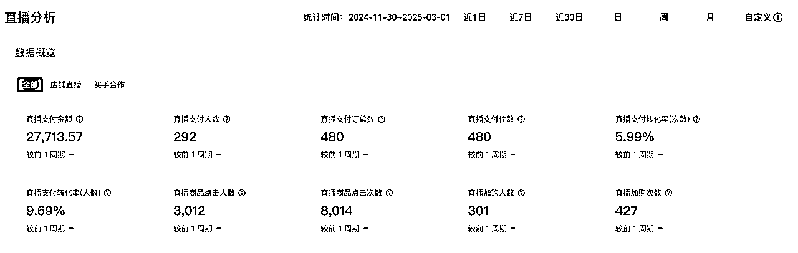

来源：https://xway63svf0a.feishu.cn/docx/K7xDdw9eqoEtLsxpsMQcsXQ0nbd
大家好，我是一名加入生财不到半年的小透明，大家可以喊我花花。在圈子里没有看到类似手工博主、线下市集的相关内容，所以分享下我过去一年的经验。
数据先行：
24年，共出市集21次，GMV12万，线上直播GMV2.4k。
25年，线下市集9次，GMV6.9万，线上转换（微信/小红书）GMV5万，共11.9万。
（注意：以上不是纯利润，请理性看待）
这是我第一次脱离“打工”赚到了钱，跟圈内的大佬肯定没得比，但对我来说已经比去年的我要强很多了。分享给有一技之长/手工爱好，或喜欢手作品的年轻人，这绝对是一件较低成本且能拿到反馈的方式。
我去年在企业里打工，朝九晚五，对赚钱和生意毫无概念，但我脑子里只有一个想法：想多赚一些钱。
24年6月，一次偶然的机会，我发现我朋友一直在一个直播间买东西，前后花了3千块钱，她说很上头，是一个手作的首饰。我发现这类型的首饰非常小众，我在线下没见过，而且可以做溢价，所以我马上注册了微信，在直播间选款，并同步寻找市集报名。拿到货之后，我更确信可以做，加了首饰店老板的微信，咨询拿货事宜，但被告知需要较高起订量，故我无法拿到更低折扣，只能做“线下和线上”的信息差，把线上好的货源卖到线下去。
总而言之，缘起在于，我发现了一个我当时认知的好品+线上线下的利润差。
下定要做的当天，我就注册了一个微信（副账号，无需成本），取了一个文艺的名字，并开始拍照。同时，开始让身边朋友发布广告，前后加了近50个微信。获得不少朋友鼓励，前后卖出10件，这也给了我信心。但光靠线上微信的转化，非常有限，朋友购买也只是“友情”支持，根本不足以支撑。当时我认为，我失败的点，不是产品，是没有关注，要跑到人多的地方吆喝才行。
刚开始，我就开始在线下搜寻市集。当时没经验，想着有摊可摆就是最好，但因为我的品更贴近于“艺术类”，夜市之类的市集被我排除。机缘巧合，碰到一个市集的策划，她刚离职想打造自己的品牌，所以摊位费比较低，我发了产品照片后就同意了。线下市集就此正式开始了。
准备市集需要三步：产品、陈列（二维码）、包装。
1.产品：相对成熟的产品我已经有了，相比其他刚开始的手工摊主，我无需测试品类，但要根据市集准备足够的量。
2.陈列：陈列要根据产品来设计，基础的陈列是桌子（一般主办方会提供，按需自己增加）、桌布、架子、耳环盘、装饰品。二维码找打印店打印就行，我当时是蹭了公司的彩印机，刚开始一切成本都是负担。
3.包装：我当时就买了塑料袋，pdd上特别便宜的。但这也是经验不足造成的，事实上，市集的客人是有买礼物的需求，所以外包装很重要，起码要厚实的牛皮袋。
第一场市集：发现自己的问题（陈列过于简单），但胜在品类特殊，轻松开单
第一场市集开始了，我把全部东西按计划摆好（第一次摆真的满头大汗），摆完去市集转了一圈，回来发现自己的陈列非常简陋（当然也感谢当时的主办方，那场市集的选品质量很高很独特，市集美陈做的也好，让我通过观察学到了很多方式）。摆了2天，卖出800（289、603），得益于品类特殊+单价低（第一天没卖出几单后，第二天马上打折出售）。但我认为那场核心问题是人流量很低，市集位置太偏，宣传弱，买我东西的2/3是摊主。
经验：一定要选择人流量大的市集，且线下市集非常非常注重陈列。
第二场市集：市集人流高，但不是我的客群
吸取第一次经验，我第二次报了一场“人多”的市集，是类似小区旁边的音乐市集，人流量不错。摆了两天，结果却卖出908元，很多人好奇来逛，但是不买，我观察客人基本都是周边居民（大爷大妈居多），根本不是首饰的客群。这场摊位费比较贵（2天300），先不算货的成本，利润都覆盖不了摊位费。
经验：合适的市集，人流量只是条件之一，客群才是关键
第三场市集：找到对的场域和客群，收入骤升，但还是存在问题
第二场市集期间，我发现我报上了第三场。但因为第二场摊位费太贵了，让我都有点犹豫，结果我跟隔壁摊主沟通，她告诉我第三场的位置特别好，强烈建议我去。同时，因为我当时在上班，那场市集是周五到周日，所以我主动找上隔壁摊主（也是卖首饰的），想跟她“拼摊”，周五她去，周六和周日我俩一起。最后，这场市集的三天成绩为破千，分别为176、747、712。
经验：找对地方了，但数据反馈，市集还是谨慎拼摊，避免分流。
第四场：首次达成三日连续日收破千（单场均在5k以上），感觉赚到钱了
吸取上三场的所有经验教训，第四场卯足了劲开始整改，买了很多陈列架子和托盘，请了一天假去摆摊，三天均在场，跟每一个能接触的客人沟通，收获反馈，提供强情绪价值。从第四场开始，我获得了强大的正反馈，按照时间来算，刚好做了一个月（虽然只在周末投入精力和时间），但对当时朝九晚五的打工牛马来说，是莫大的鼓励。这场的成绩是1611、1590、1825。
……
慢慢，我就开始第五场、第六场……成绩稳定，甚至第六次碰到节日+位置好，销量额爆了，三天做到了8.9k。
前面第一阶段，看起来风生水起，但实际有个巨大的“陷阱”！因为从来没有做过实体，第一个大坑就是“囤货”，这点在我第一阶段特别致命，因为首饰的类目特殊之处在于“给客人选择”，所以我卖出一对的背后，需要至少留10对可供客人选择，而且卖掉一些，又得补货。所以，到第八次市集的时候，我认真算了一次账（是的，我这时候才开始算账……），发现前面所有的“好成绩”都是我的自嗨，我才堪堪“回本”。主打一个，在公司为老板打工，副业为上游打工，当时一算完，感觉天都塌了。
1.谈合作，降成本：
当时我总结我的问题是“品类特殊”+“成本太高”+“渠道有限”，实体囤货是必然的，但我只有市集这一种渠道，线上私域转化也很低，完全依赖于市集也属于慢性自杀。所以，我当时做了一个举动，主动联系上游，展示我的数据，并谈上了合作，成本降低，我的压力就小了。
2.换品，彻底下手干，合作分钱：
同时，因为我深入市集，了解市集的需求和喜好。我开始发展新的品类，甚至我自己参与制作，搭建了自己的小团队，在去年年底做了我自己的小红书IP账号。（参与制作这点很重要，手作品想做自己线上IP的核心是原创）
3.同步做小红书+直播：
当时，刚好赶上去年的小红书自媒体航海，我紧跟学习，并结合线上转化+线上直播，航海结束还分享了我的经验。
从去年12月开始开播，到现在播了30+场了。过年期间，我甚至带着我的品回家过年，别人走亲戚，我在家里直播哈哈哈，家里人帮我打包，那时候感觉直播真简单啊，我这毫无经验的都能咔咔开单。不过年后回来流量回归正常，每月大概播5-6次，每次3小时，最低单场500，最高单场到2800。

好的市集场域一定是能赚钱的，可能短期赚不到什么大钱，但对打工族来说，只要你有足够的执行力和审美判断力，你一定能赚到小钱。因为我观察，我身边很多年轻人的周末娱乐并非逛商场，而是逛市集。好的市集是有足够的自然流量，在线上营销和流量难以获取的情况下，只要你能报中好的市集，就足够你去检验品类和具体产品的市场反馈。我的观察是，优质市集中有一批全职摊主，有人在持续做就一定有背后的盈利。
先去你所在的城市调研，去优质市集观察，当然好的市集主要集中在一线城市。（如果想做，除非你成本能控制特别低，否则千万不要跑外地出市集）
分享以下一些有名的市集供参考（并不全面，可以再去小红书搜索）：
思路有三：
1.差异化：一定一定要做“差异化”！在手工市集想做通货的生意，太难了，除非有特别的渠道。
2.高客单：另外，手工市集的思路绝对不同于夜市或者你家楼下的小摊，想要赚钱，建议要做高客单生意。就像这两年，水晶和玄学特别火，在线下一定有好的高金额转化，大几千金额的客单都能跑出来。还有，可以借鉴我的思路，先观察线上哪些好卖，线下是否有，把空位补上，你就有机会了。
3.基于你的喜好：要做好你可能完全卖不出的准备，毕竟跟线上电商不同，你想做，必须承担囤货压力，哪怕是自己纯手工做的，材料费等都可能压垮你。另外，当你卖你喜欢的东西，热情一定是出乎寻常的。
没有赚钱的标准答案。哪怕让过去的我从现在开始，我也未必能做到去年的成绩，你只能不断改变和摸索，才能探索自己的路。大部分报名渠道是通过小红书，如果找不到，那你就去市集上问摊主，或者小红书私信/评论。报上之后，积极准备，每一场都认真复盘，会慢慢找到自己的风格和定位的。
前面提到了我增加了品类，首饰品类目前售卖占比极低。但最近跟首饰老板进一步沟通，后续合作改为品牌授权，无需我囤货，我只是需要帮卖并提成。简直是新的收获，那我更可以继续扩展做大了，不担心囤货压力。同时，新品类今年也有其他渠道的合作，如艺术商店、买手店、礼品店、甚至品牌店等等联系我，这都是从市集获得的衍生收益。
可能源于我的性格，我很喜欢复盘和学习，我坚信“所有发生皆有利于我”。做这篇分享，也是因为我近期做小红书做了个市集经验分享，结果笔记略爆了（相比较我其他的），所以我想在圈内试试“利他”，把我所有真实的经验和数据都分享出来，供有需要的朋友参考。
这一路，都是我自己独自摸索，我想如果我未来想做大，需要更多志同道合的伙伴，所以我先发声，站在高处找伙伴。或许，做这个项目是接触“钱”的开始，敲开“生意”大门，未来可以再摸索更多方向和机会。
赚到第一块钱只是开始，让命运的齿轮转起来吧～